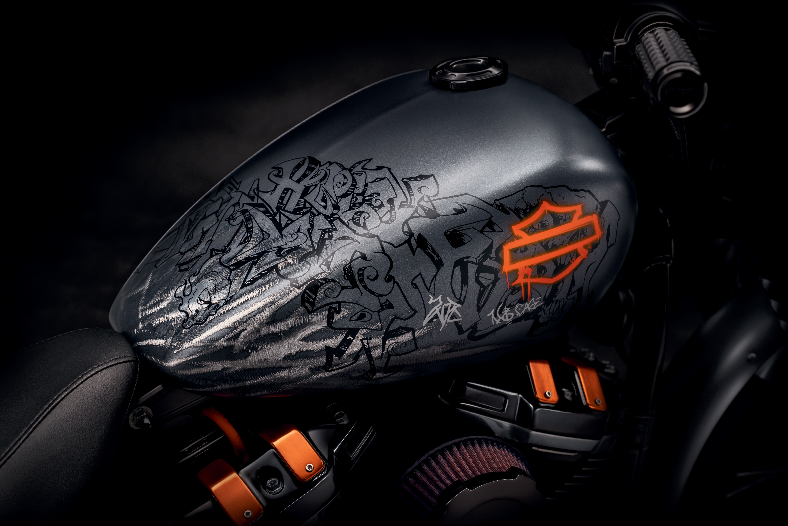

Thankyou For Reaching Out
Founder of RevolutionaryRims

Thankyou for Reaching out to us.
We are delighted to connect with you and express our heartfelt gratitude for choosing our bike restoration services. At [Your Company Name], we consider it a privilege to be entrusted with the restoration of your cherished two-wheeled companions, and we want to take a moment to thank you for being a part of our journey.We are delighted to connect with you and express our heartfelt gratitude for choosing our bike restoration services. At Revolutionary Rims, we consider it a privilege to be entrusted with the restoration of your cherished two-wheeled companions, and we want to take a moment to thank you for being a part of our journey.
Our passion for bikes runs deep, and it is this shared love for the open road that fuels our commitment to excellence in bike restoration. From vintage classics to modern marvels, we understand that each bike has a unique story to tell, and we are honored to play a part in preserving and enhancing that narrative. At the core of our company is a team of dedicated and skilled craftsmen who are not just mechanics but true artists in the world of bike restoration. With years of experience and a keen eye for detail, our team meticulously restores each bike to its former glory, breathing new life into every component while maintaining the essence of its original character.
In addition to our technical expertise, we take pride in our commitment to sustainability. We prioritize eco-friendly practices in our restoration processes, using environmentally conscious materials and methods whenever possible. Our dedication to both the art of restoration and the well-being of the planet sets us apart in the industry. Your trust in our services is the driving force behind our continuous pursuit of excellence. We consider ourselves fortunate to have customers like you who share our passion for the timeless beauty of motorcycles. As a token of our appreciation, we are always exploring ways to enhance your experience with exclusive offers, events, and community engagement initiatives.